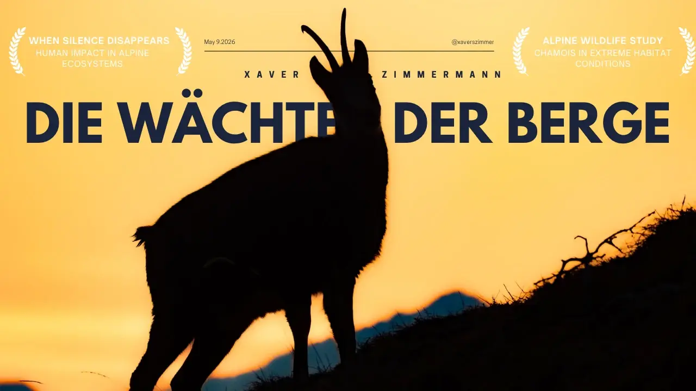
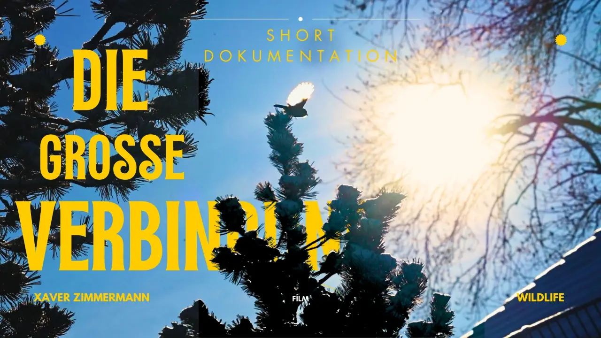
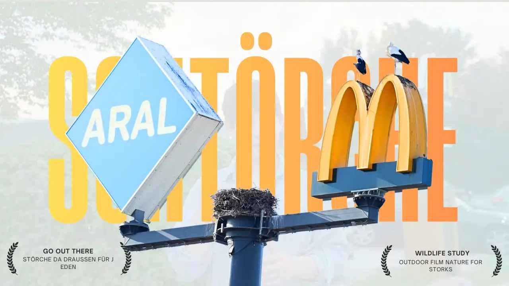
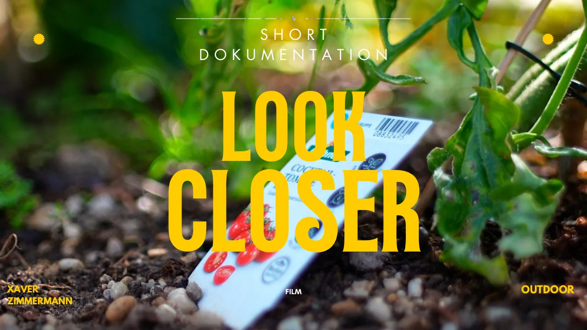

Portfolio / Films
Independent films and visual stories created by Mutter Natur.

The Watchers of the Mountain
High in the alpine mountains lives the chamois, perfectly adapted to one of the harshest environments on Earth. But even in these remote landscapes, human presence is increasingly affecting wildlife.

The Great Connection
A short film about great tits and the challenges they face during winter. It shows how they survive through cooperation, trust, and their strong connection with each other.

The Bird We Almost Lost
The White Stork was once on the brink of disappearing from Germany. This documentary tells the inspiring story of its remarkable return and the power of nature conservation.

The Tomato
A short film shot on 35mm.
Want a film like this for your project?
Tell us what you have in mind – we usually reply within 48 hours.